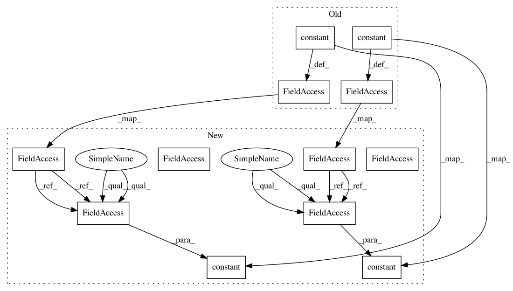

8ef6a1f133a9b18e1bd530d2dd550a93082fa59f,keras_layer_DecodeDetections.py,DecodeDetections,__init__,#DecodeDetections#,39
Before Change
if coords != "centroids":
raise ValueError("The DetectionOutput layer currently only supports the "centroids" coordinate format.")
self.confidence_thresh = tf.constant(confidence_thresh, name="confidence_thresh")
self.iou_threshold = tf.constant(iou_threshold, name="iou_threshold")
self.top_k = tf.constant(top_k, name="top_k")
self.normalize_coords = tf.constant(normalize_coords, name="normalize_coords")
self.img_height = tf.constant(img_height, dtype=tf.float32, name="img_height")
self.img_width = tf.constant(img_width, dtype=tf.float32, name="img_width")
self.coords = coords
After Change
raise ValueError("The DetectionOutput layer currently only supports the "centroids" coordinate format.")
// We need these members for the config.
self.confidence_thresh = confidence_thresh
self.iou_threshold = iou_threshold
self.top_k = top_k
self.normalize_coords = normalize_coords
self.img_height = img_height
self.img_width = img_width
self.coords = coords
self.nms_max_output_size = nms_max_output_size
// We need these members for TensorFlow.
self.tf_confidence_thresh = tf.constant(self.confidence_thresh, name="confidence_thresh")
self.tf_iou_threshold = tf.constant(self.iou_threshold, name="iou_threshold")
self.tf_top_k = tf.constant(self.top_k, name="top_k")
self.tf_normalize_coords = tf.constant(self.normalize_coords, name="normalize_coords")
self.tf_img_height = tf.constant(self.img_height, dtype=tf.float32, name="img_height")
self.tf_img_width = tf.constant(self.img_width, dtype=tf.float32, name="img_width")
self.tf_nms_max_output_size = tf.constant(self.nms_max_output_size, name="nms_max_output_size")
In pattern: SUPERPATTERN
Frequency: 4
Non-data size: 12
Instances
Project Name: pierluigiferrari/ssd_keras
Commit Name: 8ef6a1f133a9b18e1bd530d2dd550a93082fa59f
Time: 2018-03-04
Author: pierluigi.ferrari@gmx.com
File Name: keras_layer_DecodeDetections.py
Class Name: DecodeDetections
Method Name: __init__
Project Name: pierluigiferrari/ssd_keras
Commit Name: 8ef6a1f133a9b18e1bd530d2dd550a93082fa59f
Time: 2018-03-04
Author: pierluigi.ferrari@gmx.com
File Name: keras_layer_DecodeDetections2.py
Class Name: DecodeDetections2
Method Name: __init__
Project Name: pierluigiferrari/ssd_keras
Commit Name: 8ef6a1f133a9b18e1bd530d2dd550a93082fa59f
Time: 2018-03-04
Author: pierluigi.ferrari@gmx.com
File Name: keras_layer_DecodeDetections.py
Class Name: DecodeDetections
Method Name: __init__